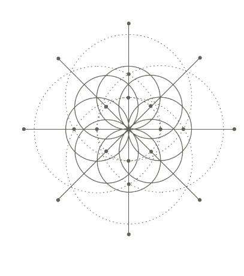

A New Generation ARC Led By Industry Experts & Veterans.
Strong Fundamentals
CFM ARC is one of India's leading asset resolution consultants with the right network of financial institutions and a history of resolving stressed assets across diverse sectors. It is one of India's growing asset reconstruction company licensed by the Reserve Bank of India (RBI) with expert set of personnel's & network who carry out acquisition & resolution of stressed assets across diverse sectors.

Our Business

As one of India's leading ARCs, within a short period of 6 years since our inception, we have carved a niche for ourself in the financial restructuring space. We work relentlessly and diligently in identifying the needs of our clients and investors ensuring a win-win collaboration for all. We strive to turnaround stressed SMEs and mid-corporates to enhance their underlying value. Our success with turnaround of viable units has led to job creation and protection for the worker community, thereby leading to social and economic upliftment. Our service offerings have two primary verticals and are at all times in compliance with regulatory issues and guidelines as may be applicable to each such business vertical.
AQUISITION
At CFM ARC, we follow a robust strategy for acquisition of NPLs and purchase NPLs at a realistic acquisition price from the lenders. We have an extensive network of consultants and advisors pan India with extensive experience in banking and various industries, who identify NPL cases with a potential to be revived and restructured
CFM ARC acquires assets spread all over India with special focus on western India which is industrially developed and collectively contributes to approximately 30% of India’s Gross Domestic Product
A comprehensive acquisition note is prepared which is put forth to the CARFA comprising of senior bankers with rich experience in stressed asset resolution who approve each proposal before acquisition.
RESOLUTION
CFM ARC’s resolution activities revolve around the core idea of maximization of realization from each distressed account it acquires. The main aim of our ARC is to revive and turnaround the distressed company where ever possible, by providing a new lease of life to the borrower/promoter and supporting the livelihood of hundreds and thousands of workers and employees working in these companies.
Our ARC’s resolution strategy has primarily been on arranging for additional financing – (last mile financing, critical capex / working capital financing) for the company through our deep connects with banking and financial institutions and the investing banking community, which is crucial for the company’s revival.
CFM ARC resolves the asset acquired by adopting one of the following strategies or a combination thereof: Restructuring cum rescheduling of dues payable by borrower, Enforcement of security interest, Sale or lease of part or whole of the business of borrower, Convert any portion of debt into shares of borrower company and, Change in or takeover of management of the business of the borrower
Clients who trust